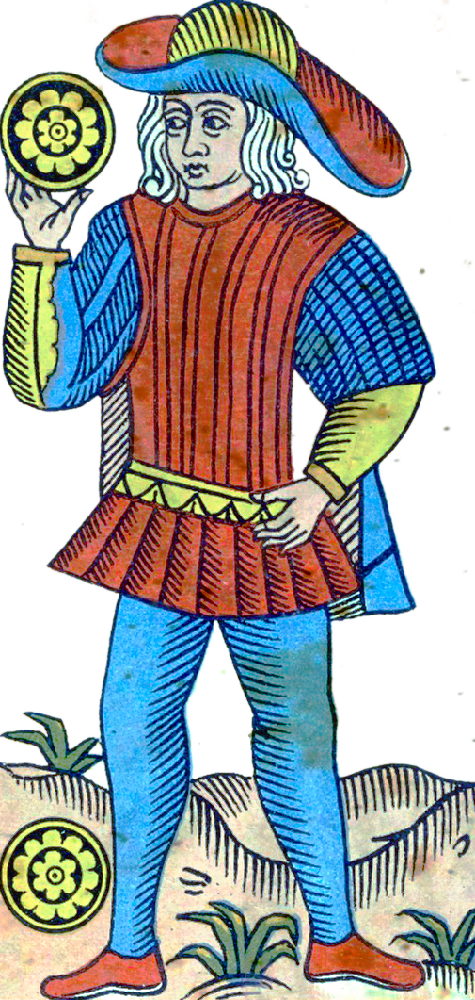
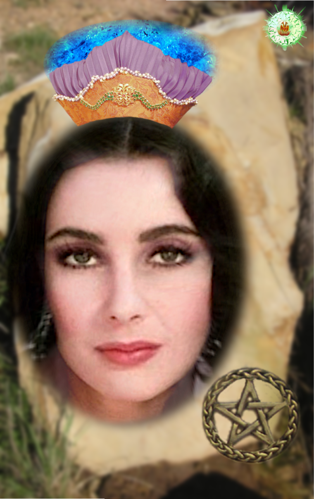
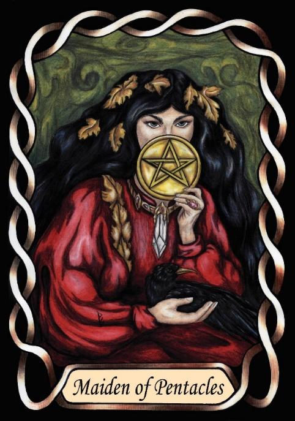

Page of Pentacles
The Composer (ISFP – FiSe)



Page |
Concrete Collaborative |
|||
Practical |
||||
Introverted Feeling Extroverted Sensing, |
||||
8.8% of population |
||||
Examples: Cher, Elizabeth Taylor, Marilyn Monroe |
||||
Meaning of Life: Expressing themselves. Expressivity |
||||
Astrology: Taurus |
||||
Pages of Pentacles are quiet, sensitive creators who bring emotional depth into the physical world. As SF Pages, they are concrete, collaborative, and motivated by personal values. Their introverted feeling gives them a strong internal sense of authenticity — they must live in alignment with what feels true, meaningful, and beautiful to them.
Their extroverted sensing grounds this emotional sensitivity in the physical world. They express their values through tangible forms: art, craft, aesthetics, movement, and sensory experience. This combination of Fi and Se makes them gentle creators — individuals who shape the world around them with subtlety, care, and personal meaning.
Placed in the Earth suit of Pentacles, their emotional intelligence becomes practical and embodied. They are the composers, artisans, and aesthetic sensitives of the Pentacles domain — individuals who create beauty through hands-on engagement with materials, textures, and physical form.
Pages of Pentacles thrive in environments where they can work quietly, independently, and creatively. They are at their best when crafting something meaningful, refining details, or expressing emotion through physical mediums. Their presence is calming, grounded, and quietly expressive.
At their core, they seek authenticity. Their meaning in life is found in creating beauty, living truthfully, and expressing their inner world through tangible form. They are the Composers of the Pentacles suit — artistic, sensitive, and deeply connected to the physical expression of emotion.